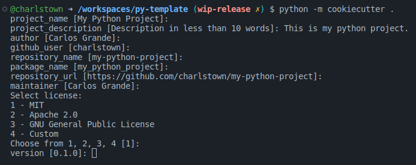
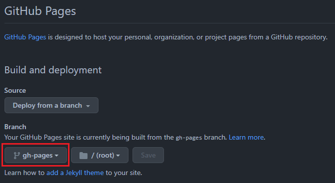

Getting started
1. What is cookiecutter
A command-line utility that creates projects from cookiecutters (project templates), e.g. creating a Python package project from a Python package project template.
Visit these links to learn more about cookiecutter. - Documentation: https://cookiecutter.readthedocs.io/ - GitHub: https://github.com/cookiecutter/cookiecutter
2. Installation
To create a new project from the template you need to install cookiecutter and follow these instructions.
2.1 Cookiecutter installation
Installing cookiecutter package on Ubuntu is very easy, you can simply run the next command to install it.
pip install cookiecutter
Visit the link to the cookiecutter documentation to learn more about the installation.
Install cookiecutter in a virtual environment
It is recommended to create a virtual environment and, install the cookiecutter library inside this environment.
2.2 Cookie Python installation
To generate a custom project from the template, follow these steps:
-
Step 1. Create the project:
Navigate to the path where you desire to generate the project folder.
cd /my-projectsThere is no need to create a specific folder for your project, cookiecutter will create the repository folder for you.
-
Step2. Select the template
Run the cookiecutter command followed by the template repository URL.
python -m cookiecutter https://github.com/charlstown/py-template.git -
Step 3. Customize the template:
Fill out the form in the console to customize the template and the project will be generated at the end.

You should see a new folder with the repository name you gave as input (my-python-project).
Congrats!  You finally installed your template to start coding your project!
You finally installed your template to start coding your project!
2.3 Adding the project to a new Github repository
-
Step 1. Create a new repository in github:
Create the new repository and make sure you give it the same name of the project folder, in our case
my-python-project.Warning
Don't add any predefined file from github in the new repository, all the files are included in the local project folder.
-
Step 2. Push the local repository:
git remote add origin https://github.com/charlstown/my-python-project.git git branch -M main git push -u origin mainNote
After pushing the project the github action
On Push Deploy Documentationwill create a new branch calledgh-pages. This branch contains the documentation files in html ready to be published in Github Pages.
2.4 Deploying the documentation in Github
Deploy your documentation in Github pages is so easy, you only need to set the pages configuration pointing at the gh-pages branch generated by our github action On Push Deploy Documentation.
Warning
To deploy the documentation in Github Pages the repository must be a public repository.
- Go to the repository settings.
- Select
Pagesat the settings menu under thecode and automationsection. -
Make sure pages is enable and select
gh-pagesas the site branch underBuild and deploymentsection.
Your site should be live at: https://charlstown.github.io/my-python-project/
Visit the Set Up section to learn more about the template generation and the input parameters.